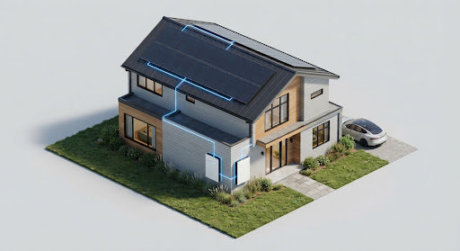

1 · WhatOne sentence, one picture
Your own private AI, on the PC beside your battery.

Illustration2 · Why
Three reasons to keep your AI at home
Our design
Your data stays home
The model runs on the PC beside your battery and answers over your home network.
Zip + dates all that goes out, for public records
See the data flow
Simulation
One hourly rate, ask all you like
You pay for GPU time on the PC or station you use. Ask as much as you like within that hour.
$1.20 per GPU-hour, member tier
See plans
Simulation
Works in an outage
The battery keeps the PC and your essentials on. A 30% reserve stays ready for backup.
27.4 hours at 1 kW before the reserve floor
See energy
3 · How
From your question to an answer
Your part, at homeBase's part, on the fleetEach box opens its page.
How we built it
- Answers at homePython sends the question and the right Base Brain notes to Ollama (gemma4:e4b) on the home PC. A one-line script installs it.brain/ask.py · scripts/install-local.sh
- The fleet and its rulesA fleet simulation runs 50 nodes over 3 real ERCOT days with the job rules, the 30% backup floor and the price pause.sim/fleet.py
- Try it in the browserWebLLM runs Qwen2.5-0.5B right in this browser on WebGPU, with no install.web/models.js · models.html
What you can do
Everything for your home AI
Measured
Ask your home AI
Ask about your battery, your bill or a storm and get an answer with sources.
2.2 s
median answer on a laptop
Measured
See how it thinks, and try it
Pick a local model, see each step, and run one in this browser.
18 of 20
test questions answered correctly
Simulation
Energy and credits
What your battery and PC did this week, hour by hour.
$124.16
value this week, battery plus GPU
Our design
Plans: use or host a GPU
Use a GPU for your own questions, or host one and share in the time sold.
3 offers
Use, Host, Sell
Simulation
Your node
The PC beside your battery: when it is free, what it ran and its neighbors.
160
GPU-hours run this week
Our design
Help
Plain answers about Base, backup, storms and privacy, each with its source.
47
member answers with sources